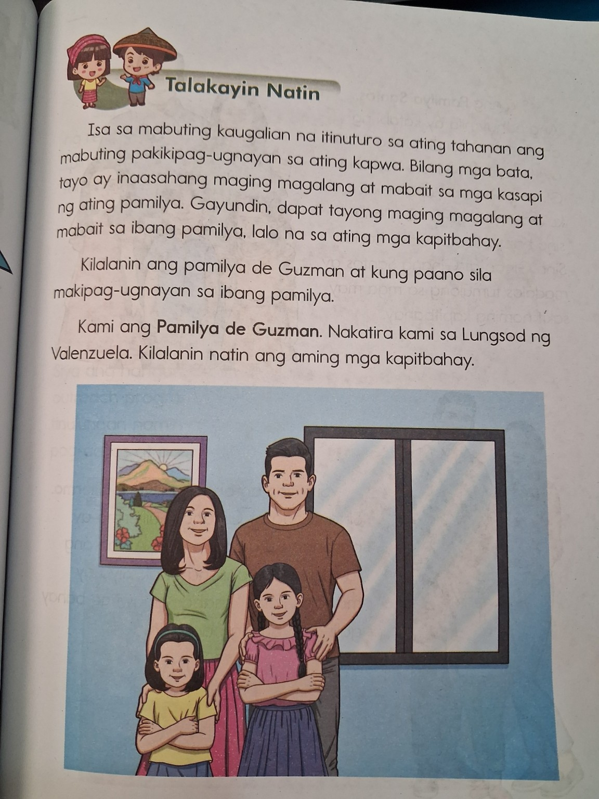
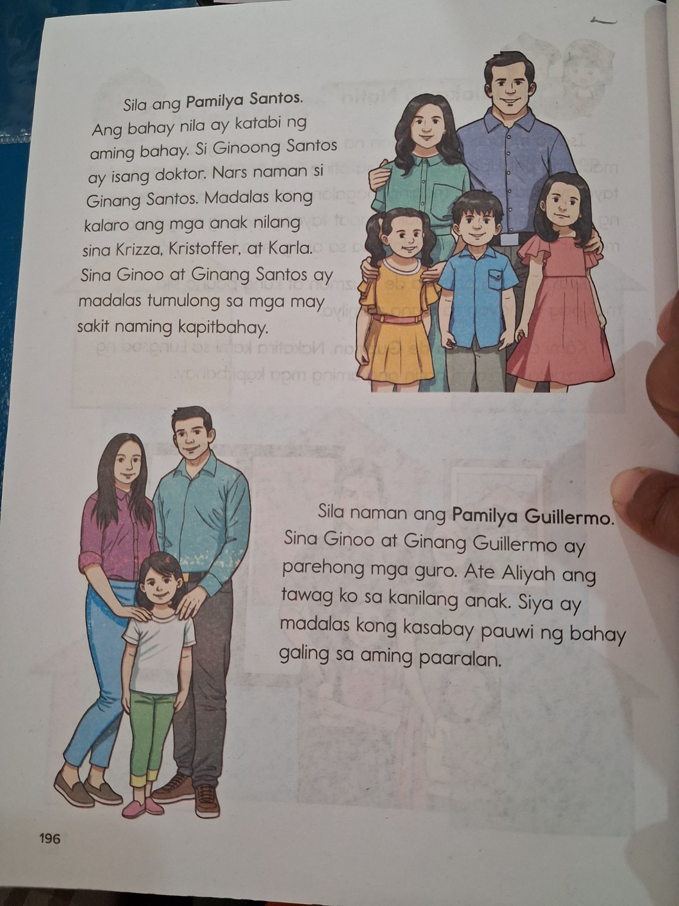
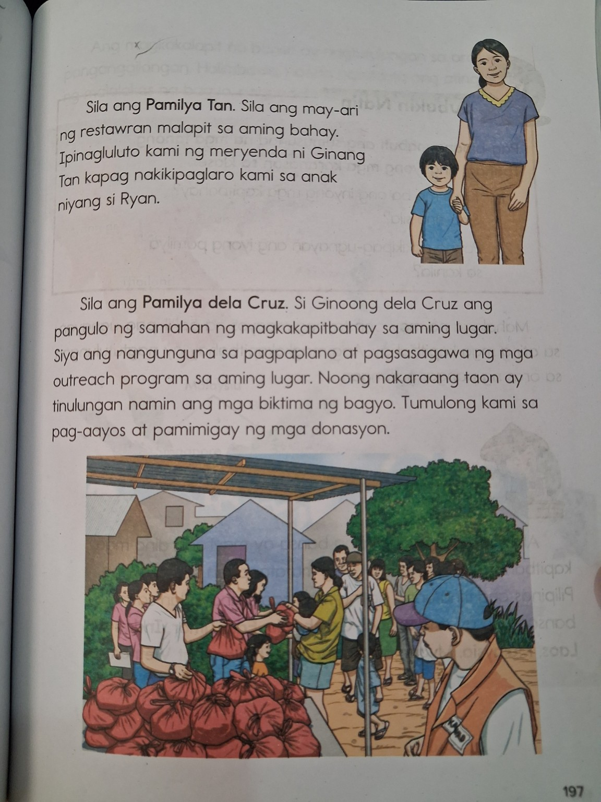
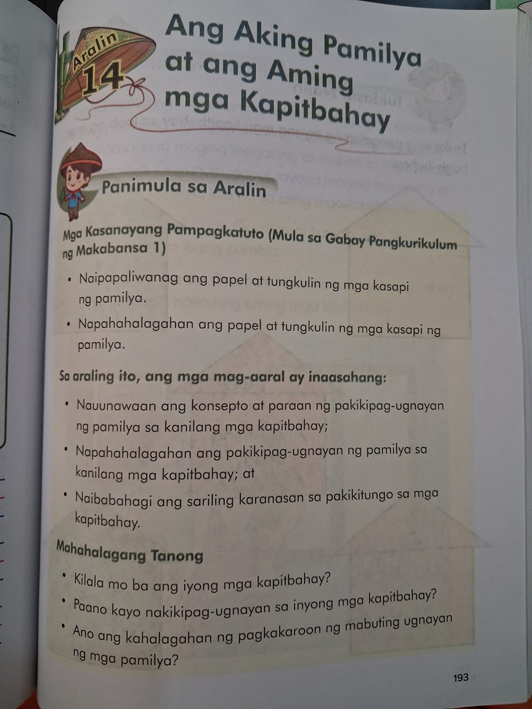
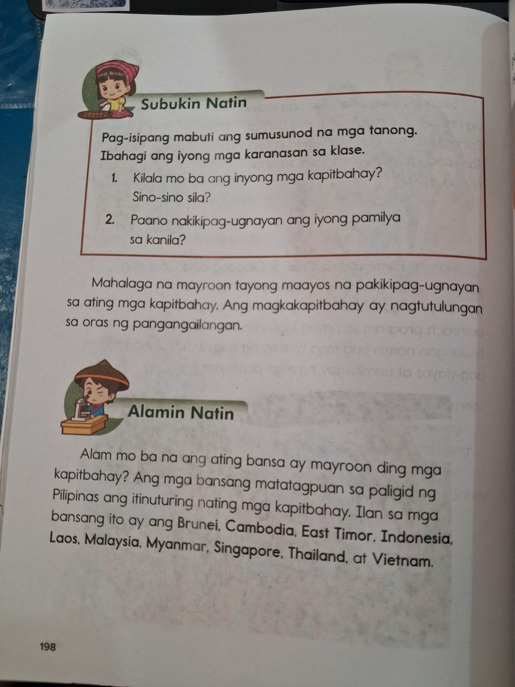
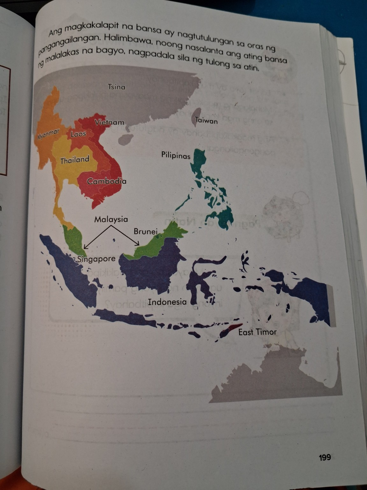

Pamilya
Ang mga kasapi ng pamilya ay may kani-kaniyang papel at tungkulin. Mahalaga ang pagtutulungan sa tahanan.

Matutong makipag-ugnayan nang maayos sa pamilya at mga kapitbahay, pahalagahan ang pagtutulungan, at kilalanin ang mga bansang kapitbahay ng Pilipinas.

Buksan ang mga misyon habang natututo ka.
May mga taong nakatira malapit sa inyong bahay. Sila ay maaaring maging inyong mga kapitbahay.
Ang mabuting kapitbahay ay marunong makitungo nang maayos, tumulong, at makiisa kapag may pangangailangan.
Alin ang magandang gawin kapag may kapitbahay kang nangangailangan?
Ang mga kasapi ng pamilya ay may kani-kaniyang papel at tungkulin. Mahalaga ang pagtutulungan sa tahanan.
Maging magalang, mabait, matulungin, at maunawain sa mga kasapi ng pamilya at kapitbahay.
Ang magkakapitbahay ay maaaring magtulungan sa oras ng pangangailangan, tulad ng panahon ng sakuna.
May mga bansang malapit sa Pilipinas. Kabilang sa mga binanggit sa aralin ang Brunei, Cambodia, East Timor, Indonesia, Laos, Malaysia, Myanmar, Singapore, Thailand, at Vietnam.
Makikita sa aralin ang isang pamilya na nakatira sa Valenzuela at nakikipag-ugnayan sa kanilang mga kapitbahay.

Ang mga kapitbahay ay maaaring magtulungan. Halimbawa, may mga pamilyang tumutulong sa mga kapitbahay na may sakit o nangangailangan.

Maaaring maging maganda ang samahan sa kapitbahayan sa pamamagitan ng pagiging mabait, pakikipaglaro, pagtulong, at sama-samang pagkilos.
Piliin ang pinakamagandang sagot. May gabay pagkatapos ng bawat sagot.
Subukan mong sagutin nang mag-isa.
Dalawang laro para sa iyong kaalaman.
Piliin kung MABUTI o HINDI MABUTI ang kilos.
Alin sa mga bansa ang kabilang sa mga bansang binanggit sa aralin bilang mga kapitbahay ng Pilipinas?
Kapitbahay — taong o pamilyang nakatira malapit sa atin.
Mabuting pakikitungo — pagiging magalang, mabait, at matulungin.
Pagtutulungan — sama-samang pagkilos lalo na kapag may pangangailangan.
Bansang kapitbahay — mga bansang malapit sa Pilipinas na binanggit sa aralin.
Tanong: Bakit mahalaga ang mabuting ugnayan ng mga magkakapitbahay?
Piliin ang mabuting kilos sa bawat sitwasyon.
May bagong kapitbahay. Ano ang maaari mong gawin?
May kapitbahay na nangangailangan ng tulong. Ano ang maaari mong gawin?
May hindi pagkakaunawaan. Ano ang mabuting gawin?
10 tanong. Piliin ang pinakamainam na sagot.
Balikan ang mga tanong na hindi mo nasagot nang tama. Kung mataas ang iyong marka, subukan ang hamon.
Ang pagkatuto ay hindi paligsahan. Ang mahalaga ay naiintindihan mo, nagsasanay ka, at patuloy kang umuunlad.
Mga larawang ibinigay bilang sanggunian para sa lesson experience.


